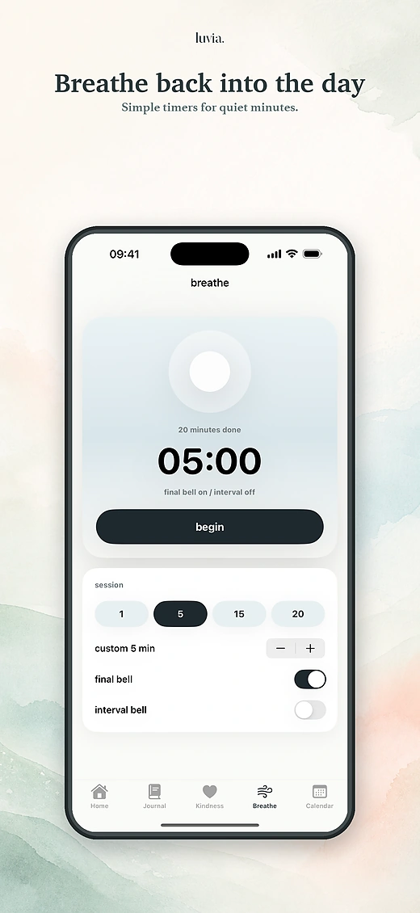
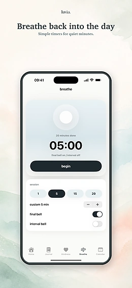

Un lugar más amable para hacer una pausa.
Luvia: la app de bienestar privada construida en torno a la amabilidad
Un lugar tranquilo y seguro para tu bienestar: registra tu ánimo, escribe tu diario y tu gratitud, respira y descansa un momento, y comparte palabras amables de forma anónima.

privado por defecto
Tus reflexiones se quedan en tu dispositivo.
Tus entradas del diario, notas de gratitud, registros de ánimo, sesiones de respiración y ajustes locales se guardan en tu dispositivo.
Diario en tu dispositivo
Escribe esa pequeña verdad, guarda un agradecimiento y tenlo cerca.
Sin cuenta para empezar
El diario, el ánimo, la gratitud y la respiración funcionan sin iniciar sesión. Solo Kind messages necesita una cuenta.



apoyo anónimo
Kind messages, sin nombres.
Kind messages son notas anónimas de apoyo: un lugar seguro y amable para sentirte menos solo. Envía lo que llevas dentro o acompaña la nota de otra persona cuando puedas.
Revisiones de seguridad antes de compartir
Luvia revisa los Kind messages en busca de datos de contacto, amenazas, acoso, contenido sexual, spam y otro material inseguro.
Sesiones de respiración tranquilas
Cuando las palabras sobran, usa el temporizador sencillo para volver a respirar y reencontrarte con el día.
capturas
Cuidado diario, organizado con amabilidad.
Ánimo, diario, gratitud, respiración, amabilidad y tu clima interior en una sola app de iOS.




creado para generar confianza
Límites sencillos para un espacio delicado.
Las reflexiones privadas se quedan en tu dispositivo
Luvia no usa tu diario privado, tu ánimo, tus agradecimientos ni tus sesiones de respiración para publicidad.
La amabilidad se modera
Los mensajes anónimos usan un procesamiento limitado para que la función pueda operar y se puedan prevenir abusos.
Un diseño tranquilo para cada día
Luvia está pensada para un uso diario tranquilo y reparador: un espacio amable y centrado para tu bienestar de cada día.
aviso importante
Luvia no es apoyo de salud mental.
La app puede ayudarte con la reflexión, el diario, la respiración y el ánimo anónimo, pero no es terapia, atención médica, apoyo en crisis ni atención de emergencia. Si crees que podrías hacerte daño o hacérselo a otra persona, contacta de inmediato con los servicios de emergencia locales o con alguien de confianza.